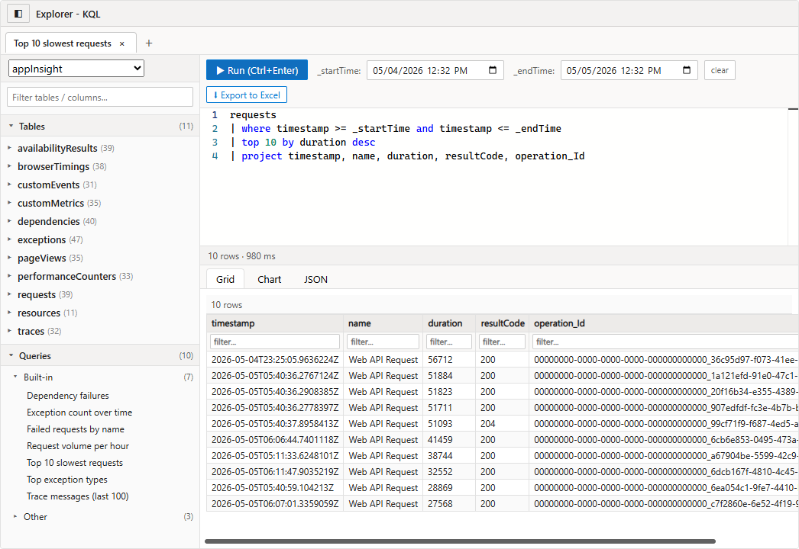
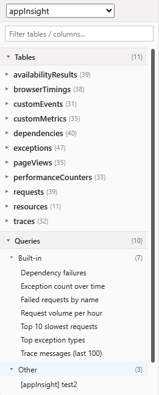
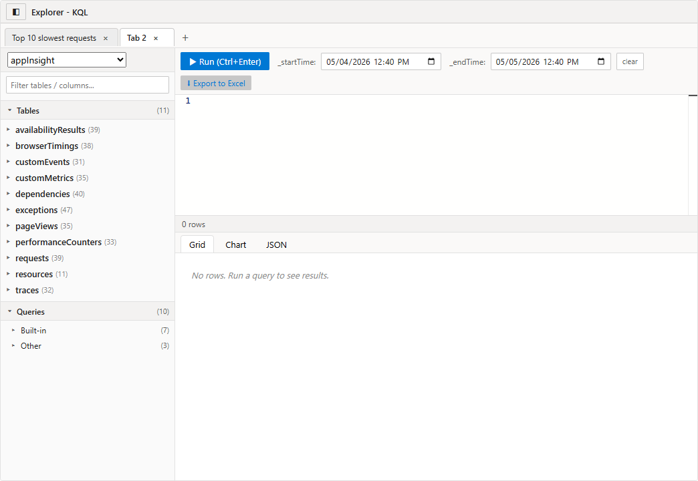
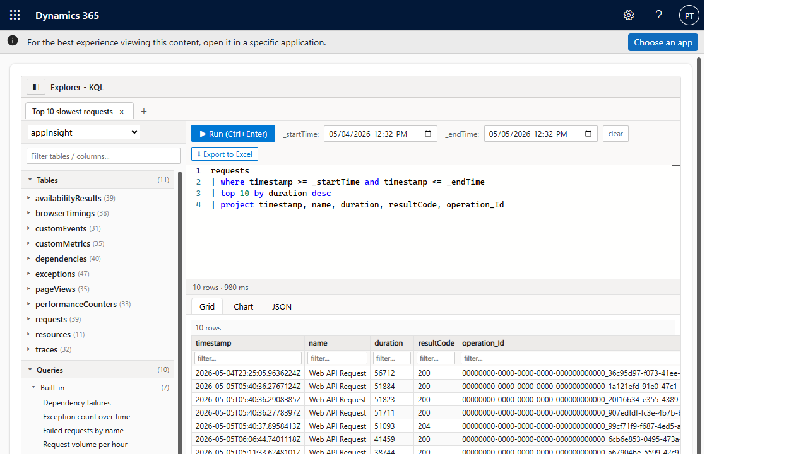

Source code: github.com/SweetsNSavories/Explorer-KQL · Managed solution: latest release
Application Insights is increasingly where the diagnostic truth lives for a Dataverse application. Plugin trace logs, Power Automate run history, custom telemetry, and now Conversation Diagnostics for Copilot Studio / agent flows all flow into Application Insights — the surface that used to live inside Dataverse has effectively moved to Azure Monitor.
Most organizations do provision the Azure subscription and the Application Insights resource — that part is rarely the blocker. The blocker is granting per-user RBAC on it, and then asking a business owner to leave the model-driven app they live in, sign in to the Azure portal, find the right resource, and learn the Logs blade just to answer a question about their own application. From a UX standpoint that’s overwhelming — it feels like “that’s not mine, that’s some ops team’s Purview-shaped territory’, and the user disengages.
Explorer-KQL inverts that. Azure credentials live once in a single Dataverse-side service principal (held by the plugin), and any user the admin trusts gets a full KQL editor — tabs, schema tree, saved queries, time pickers, grid/chart/JSON output, Excel export — right inside the model-driven form they already use every day. No Azure portal hop, no per-user RBAC, no context switch. Putting just the relevant slice of telemetry inside the user’s familiar tool invites them to use it, rather than alienating them.

Explorer-KQL is a virtual PCF (React) control that talks to Application
Insights through a Dataverse Custom API
(vip_azuremonitorquery). The Custom API is implemented by a
server-side plugin that holds the Azure AD service principal credentials and
proxies four operations:
apps — lists the configured Application Insights instances.schema — returns the table/column metadata for a given app.savedqueries — returns built-in queries plus everything from the app's
analyticsItems ("Other") and any queryPacks in the same resource group
(Alerts, Performance, Browsing data, etc.).query — runs an arbitrary KQL string and returns a row array.Because the credentials live in the plugin, end users never need direct Azure access — they get full KQL diagnostics with only their existing Dataverse role.


The end-to-end request path is intentionally short:
┌──────────────────────────┐
│ PCF control (React/TS) │ Xrm.WebApi.execute({ vip_azuremonitorquery })
│ in the model-driven form│ ─────────────────────────────────────────────┐
└──────────────────────────┘ ▼
┌────────────────────────────────┐
│ Custom API: vip_azuremonitorquery │
│ (Stage 30 plugin step) │
└────────────┬───────────────────┘
│ https
▼
┌─────────────────────────────────────────┐
│ login.microsoftonline.com /token │
│ (client-credentials, SP) │
└────────────┬─────────────────┬──────────┘
▼ ▼
api.applicationinsights.io management.azure.com
(query / metadata) (queryPacks, analyticsItems)
https://api.applicationinsights.io/.default for the data plane (KQL + metadata), and https://management.azure.com/.default for the control plane (query packs & analyticsItems lists).
The natural instinct is to dotnet add package Azure.Monitor.Query
and call it a day — but the Dataverse plugin sandbox
blocks almost every transitive dependency that modern Azure SDK clients need
(System.Memory, System.Buffers, MSAL, dependency-injection helpers, etc.).
Even with ILMerge / ILRepack, the sandbox's strict assembly-load rules and
isolation-level reflection checks reject most of them at runtime.
The pragmatic answer is to keep the plugin's reference graph
tiny and call the same REST endpoints the SDK would call
under the hood. The full .csproj is just two NuGet packages plus
the BCL System.Net.Http:
<Project Sdk="Microsoft.NET.Sdk">
<PropertyGroup>
<TargetFramework>net462</TargetFramework>
<LangVersion>latest</LangVersion>
<SignAssembly>true</SignAssembly>
<AssemblyOriginatorKeyFile>vip.snk</AssemblyOriginatorKeyFile>
<AssemblyName>vip.AzureMonitorQuery</AssemblyName>
<RootNamespace>vip.AzureMonitor</RootNamespace>
<CopyLocalLockFileAssemblies>false</CopyLocalLockFileAssemblies>
</PropertyGroup>
<ItemGroup>
<PackageReference Include="Microsoft.CrmSdk.CoreAssemblies" Version="9.0.2.54" />
<PackageReference Include="Newtonsoft.Json" Version="13.0.3" />
<Reference Include="System.Net.Http" />
</ItemGroup>
</Project>vip.snk is generated once with
sn -k vip.snk.IPlugin, IOrganizationService, the
QueryExpression family, etc.
Without MSAL, we POST a plain client_credentials form to the v2
token endpoint. Tokens are cached in-memory inside TokenService
(keyed by clientId|tenantId|scope) so a warm sandbox reuses
them across calls until expiry:
POST https://login.microsoftonline.com/<tenant>/oauth2/v2.0/token
Content-Type: application/x-www-form-urlencoded
grant_type=client_credentials
&client_id=<app-id>
&client_secret=<secret>
&scope=https://api.applicationinsights.io/.defaultFor data- and control-plane operations the plugin calls the same first-party REST endpoints that the official Azure SDKs are generated from. Every URL below is publicly documented — no reflection, no decompilation required.
| Operation | Endpoint | Auth scope | Reference |
|---|---|---|---|
query |
POST /v1/apps/{appId}/query |
api.applicationinsights.io/.default |
REST: Query — Execute |
schema |
GET /v1/apps/{appId}/metadata |
api.applicationinsights.io/.default |
REST: Metadata — Get |
savedqueries (per-app legacy) |
GET {armId}/analyticsItems?api-version=2015-05-01&scope=shared&type=query&includeContent=true |
management.azure.com/.default |
ARM: AnalyticsItems — List |
savedqueries (query packs) |
GET /subscriptions/{sub}/resourceGroups/{rg}/providers/Microsoft.Insights/queryPacks?api-version=2019-09-01-preview + per-pack /queries |
management.azure.com/.default |
ARM: Query Packs / Query Pack Queries |
HttpClientHandler tweaks.
Use a static HttpClient instance. Re-creating one
per call leaks sockets fast in long-running app domains..GetAwaiter().GetResult() at the
boundary. Only do this on truly synchronous code paths.Environment.GetEnvironmentVariable.
Read Dataverse environment variables through the SDK
(environmentvariabledefinition + environmentvariablevalue).
The helper ReadEnvVar in the plugin does exactly that.# 1. Build the plugin (NuGet restore + compile to a single signed DLL)
cd PreOpPlugin
dotnet build -c Release
# Output: bin\Release\net462\vip.AzureMonitorQuery.dll (~30 KB)
# 2. Push the DLL into Dataverse via Web API (no Plugin Registration Tool needed)
cd ..\deploy
node push-plugin.mjs # PATCH pluginassembly + PublishXml
# 3. Build & push the PCF (React/TS bundle)
cd ..\KustoExplorerControl
pac pcf push --publisher-prefix vip
# 4. Re-export the whole thing as a managed solution zip
cd ..\deploy
node export-solution.mjs # writes dist\KustoExplorerSolution_*_managed.zip
The two REST surfaces the plugin uses are described by Microsoft's public
OpenAPI / Swagger specifications. The official Azure SDKs (.NET
Azure.Monitor.Query, JavaScript @azure/monitor-query,
Java, Go, etc.) are generated from these same specs — so calling
the URLs directly is exactly what those SDKs do under the hood.
systemuser
The control runs on a new, dedicated form on the
systemuser entity called “Kusto Explorer”
(formid = 69c22e59-1888-4d06-9afb-4d301a3a5d2f).
Two design choices matter here:
behavior="2" (metadata-only), which means existing
Main / Quick Create / Card forms are left exactly as they are. Only
the new “Kusto Explorer” form is added.
The form itself is intentionally minimal: a single full-width section that
hosts the PCF (vip_vip.KustoExplorer) bound to a no-op
attribute, plus the form-script web resource
vip_/js/kustoexplorer_form.js which hides the rest of the
command bar and stretches the control to the viewport.
Shipping the PCF without a role would force admins to invent one or grant
System Administrator. Instead the managed solution ships a
least-privilege role — PPAC Kusto Reader
(roleid = 08d61102-7247-f111-bec6-7c1e5267f8c3) —
designed so that an operator with only this role plus the standard
Basic User role can open the Kusto Explorer form and execute queries.
Privilege grid (all granted at Global scope):
| Privilege | Why it’s needed |
|---|---|
prvReadUser | Open systemuser records so the form can be displayed. |
prvReadEntity | Read entity metadata so the model-driven host can render the form. |
prvReadCustomization | Load the form definition, the PCF manifest, and the web resource binding. |
prvReadWebResource | Download vip_/js/kustoexplorer_form.js and the PCF bundle. |
prvReadCustomAPI | Discover and call the vip_azuremonitorquery Custom API. (Custom API execution is governed by read on the message + ownership of the bound entity; no separate execute privilege exists.) |
prvReadSdkMessage, prvReadSdkMessageProcessingStep, prvReadSdkMessageProcessingStepImage | Required by the platform when invoking a Custom-API-registered SDK message from the Web API. |
prvReadPluginAssembly, prvReadPluginType | Allow the platform to resolve the plugin that backs the Custom API. |
prvReadEnvironmentVariableDefinition | Lets the plugin (running in the caller’s context) resolve vip_AppInsightsAppId / TenantId / ClientId / ClientSecret. |
prvReadOrganization | Standard read of org settings used by the form runtime. |
prvReadSharePointData, prvReadSharePointDocument, prvCreateSharePointData, prvWriteSharePointData | Carry-over from the role template; harmless if SharePoint integration is not enabled, and ignored otherwise. Safe to remove post-import if your governance bars them. |
systemuser record, switch to the “Kusto Explorer” form, and run
queries.
| Component | Required | Notes |
|---|---|---|
| Dataverse environment | Any modern (9.2+) production or sandbox | You need a System Customizer / System Administrator role to import the solution. |
| Maximum upload file size | ≥ 32 MB | The PCF bundle is large. If maxuploadfilesize is the default 16 MB you'll see 0x8004f114 on import. Bump it via Power Platform admin center → Environment → Settings → Email → Maximum file size, or via the Web API:
|
| Application Insights resource(s) | 1 or more | Workspace-based or classic; both work. You'll need each app's Application ID (a GUID) and Resource ID (the full ARM path). |
| Microsoft Entra application (service principal) | Yes | Used by the plugin for non-interactive AAD auth. You'll capture Tenant ID, Client ID, and a Client secret. |
| Azure RBAC on each AI resource | Monitoring Reader |
Granted to the SP above. This is what authorizes both the analytics query API and the Query Pack listing. |
KustoExplorerSolution_1_0_1_managed.zip (attached to this post).Explorer-KQL custom control (vip.KustoExplorer).vip_azuremonitorquery Custom API and its plugin assembly.All non-secret configuration is held in environment variables so the same managed solution can ship across DEV / TEST / PROD.
| Schema name | Type | Description |
|---|---|---|
vip_AppInsightsTenantId |
Text | The Microsoft Entra tenant GUID that owns your service principal. |
vip_AppInsightsClientId |
Text | Application (client) ID of the SP. |
vip_AppInsightsClientSecret |
Secret | Client secret value. Never the secret ID. In Vault-backed environments this points to a Key Vault secret URI; otherwise it is encrypted at rest by Dataverse. |
vip_AppInsightsAppId |
Text (JSON array) | The list of Application Insights instances the control should expose. Use the JSON array form below — a plain GUID also works for a single app, but loses friendly names and the Query Pack lookup. |
Set vip_AppInsightsAppId to a JSON array, one entry per AI resource:
[
{
"name": "DynamicsOfficeWebhook",
"appId": "00000000-0000-0000-0000-000000000000",
"armId": "/subscriptions/<sub-guid>/resourceGroups/<rg-name>/providers/Microsoft.Insights/components/<ai-name>"
},
{
"name": "appInsight",
"appId": "11111111-1111-1111-1111-111111111111",
"armId": "/subscriptions/<sub-guid>/resourceGroups/<rg-name>/providers/Microsoft.Insights/components/<ai-name>"
}
]For each Application Insights resource you listed in
vip_AppInsightsAppId:
Monitoring Reader.vip_AppInsightsClientId).If you prefer the CLI:
az role assignment create \
--role "Monitoring Reader" \
--assignee <sp-object-id> \
--scope "/subscriptions/<sub-guid>/resourceGroups/<rg-name>/providers/Microsoft.Insights/components/<ai-name>"
+ to open a new tab. Each tab keeps its own KQL,
time window, AI instance selection, and result set.× to close it.
The two pickers labelled _startTime and _endTime get
literally substituted into your query text. Reference them anywhere you would
use a time literal:
requests
| where timestamp >= _startTime and timestamp <= _endTime
| summarize count() by bin(timestamp, 5m).xlsx with the current grid and column types.| Symptom | Likely cause | Fix |
|---|---|---|
InsufficientAccessError (403) on every query. |
The service principal lacks Monitoring Reader on the AI resource. |
Re-do the role assignment in Grant Azure permissions. |
| Saved Queries shows only the built-ins. | armId missing from vip_AppInsightsAppId, or the SP can't list query packs in that resource group. |
Add armId, and ensure Monitoring Reader covers the RG (or the AI resource alone is fine for analyticsItems). |
| Schema sidebar stays at "loading…". | App ID typo, or AI instance has zero ingested data, or token acquisition failed. | Check Plug-in Trace Log for vip_azuremonitorquery. The first call writes a token-acquisition trace. |
Solution import fails with 0x8004f114 ("Webresource content size is too big"). |
The org's maxuploadfilesize is below the bundle size. |
Bump it as shown in Prerequisites. |
| UI changes don't appear after upgrading. | Browser cached the old PCF bundle. | Hard refresh (Ctrl+F5) once. The bundle URL is fingerprinted on each managed import, so the cache will only stick for one session. |
Explorer-KQL ships under the Mission Critical tooling family. Source code, issues, and contribution guidelines: github.com/SweetsNSavories/Explorer-KQL.